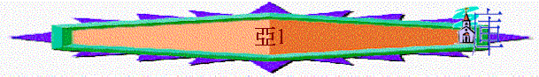

|
耶和華心�媟巨鉹齞� |
|||
|
為選民犯罪而大發烈怒 |
為重建錫安而極其火熱 |
為復興錫安而極其火熱 |
為彌賽亞國而親自成就 |
|
1:2-6 |
1:7-6:15 |
7-8 |
9-14 |
「大利烏王第二年八月，耶和華的話臨到易多的孫子、比利家的兒子先知撒迦利亞，說：」1:1
1.大利烏王
〜即波斯王大利烏一世，而大利烏王第二年，即520
B.C.
2.撒迦利亞
「同著撒拉鐵的兒子所羅巴伯和耶書亞回來的祭司與利未人記在下面：祭司是西萊雅、耶利米、以斯拉、」尼
12:1
「易多、近頓、亞比雅、」尼12:4
「易多族有撒迦利亞；近頓族有米書蘭；」尼12:16
〜易多應是亞倫的子孫，是作祭司的，所以撒迦利亞可能身兼祭司與先知的身份。
一.
為選民犯罪而大發烈怒(1:2-6)
〜在還沒鼓勵他們建殿之先，神透過先知吩咐選民要回轉離惡，這比建殿更重要！否則神的怒氣會臨到他們像臨到他們列祖一樣，當然他們只顧自己的安逸，而忘記建殿也是惡事！
1.耶和華過去的忿怒(1:2)
「耶和華曾向你們列祖大大發怒。」1:2
〜神一直十分重視(緊張)選民的，過往在出埃及記至今，他們的列祖曾犯罪，惹神大大發怒，神的怒氣是帶有審判的，曾在曠野中擊殺選民，也曾不許他們入迦南。
2.耶和華現在的心意(1:3-4)
「所以你要對以色列人說，萬軍之耶和華如此說：你們要轉向我，我就轉向你們。這是萬軍之耶和華說的。不要效法你們列祖。從前的先知呼叫他們說，萬軍之耶和華如此說：『你們要回頭離開你們的惡道惡行。』他們卻不聽，也不順從我。這是耶和華說的。」1:3-4
A.轉向真神
B.不效列祖
3.列祖不順從的鑑戒(1:4-6)
A.過往的悖逆
「耶和華他們列祖的神因為愛惜自己的民和他的居所，從早起來差遣使者去警戒他們。他們卻嘻笑神的使者，藐視他的言語，譏誚他的先知，以致耶和華的忿怒向他的百姓發作，無法可救。」
代下 36:15-16
〜列祖過往不聽先知勸戒，不順從神的吩咐，現選民應以此為鑑，若神要他們離開惡道，他們要離開，若神吩咐他們要建殿，他們應立刻去行！
B.至終的發現
「你們的列祖在那裡呢？那些先知能永遠存活嗎？只是我的言語和律例，就是所吩咐我僕人眾先知的，豈不臨到你們列祖嗎？他們就回頭，說：『萬軍之耶和華定意按我們的行動作為向我們怎樣行，他已照樣行了。』」1:5-6
a.所敬仰的列祖會過去
〜他們的列祖及先知也隨年日已逝去，不能永存
b.耶和華的說話卻長存
「我實在告訴你們，就是到天地都廢去了，律法的一點一畫也不能廢去，都要成全。」太
5:18
〜但神的應許、說話，預言的審判卻不落空，已應驗在列祖身上，列祖也真是受神管教。
〜而「臨到」可譯「追上」「趕上」，神的審判也追上他們的列祖上！
c.耶和華的管教真實現
〜當列祖回頭看回時，真是發現神會按他們所行的報應他們，所以現今的選民該留心，不要再惹神發怒！
二.為重建錫安而極其熱心(1:7-6:15)
〜神用8個以下的異象逐步表明祂如何為重建錫安及聖殿熱心，祂不是莫不關心選民的情況
1.第一異象----人騎紅馬----全然鑑察(1:7-17)
A.異象的內容
「大利烏第二年十一月，就是細罷特月二十四日，耶和華的話臨到易多的孫子、比利家的兒子先知撒迦利亞，說：「我夜間觀看，見一人騎著紅馬，站在窪地番石榴樹中間。在他身後又有紅馬、黃馬，和白馬。」」1:7-8
∼細罷特月是巴比倫曆法的名稱，該是初春的時節，相當於二月，仍在雨季，氣候已經轉暖，可在戶外活動了。
B.異象的解釋
「我對與我說話的天使說：「主啊，這是什麼意思？」他說：「我要指示你這是什麼意思。」那站在番石榴樹中間的人說：「這是奉耶和華差遣在遍地走來走去的。」」1:9-10
a.站在番石榴樹中間的人----耶和華的使者(1個)
b.騎紅馬、黃馬、白馬----那些奉耶和華差遣在遍地走來走去者(不只一位)
c.主要工作----觀察全地，並將全地都安息平靜的情況告知耶和華的使者。
d.紅馬、黃馬、白馬----按亞6:1-8，不同頻色代表地的不同方向，馬代表往普天下去
e.在窪地番石榴----聖經沒解釋，「番石榴樹中間」，不僅是幾棵樹，可能有一個小樹叢，高度僅八呎之下，樹葉常青，開小白花，芬芳僕鼻，為希伯來人十分喜愛的野生植物，是他們期待的彌賽亞時代豐茂的果木（參閱賽四十一19及五十五13）。番石榴樹葉與棕樹枝，都可採下作搭住棚節的帳棚之用（參閱尼八15）。在利未記第廿三章四十節，以色列人摘柳枝搭棚，為保留番石榴樹與橄欖樹。但巴勒士坦遍處都有這類樹木，在山坡及河邊，十分眾多，而且茂繁。番石榴樹長於低地，似象徵以色列民族的地位雖然低下（可能指以色列人在低沉處境中），卻有馨香的見證。參考:
http://www.ccbiblestudy.org/Old%20Testament/38Zech/38CT01.htm
C.進深的意思
〜若留意下文，我們會發現「安息平靜」可能兩個意思
a.以色列已經被擄至巴比倫七十年，以色列地已全然荒涼，安息七十年
「這全地必然荒涼，令人驚駭。這些國民要服事巴比倫王七十年。」耶25:11
b.對以色列不好的列國也安逸了很久
「我甚惱怒那安逸的列國，因我從前稍微惱怒我民，他們就加害過分。」亞1:15
c.透過使者的滙報，我們看到神不是不知道全地的情況，祂知道選民已被擄七十年，地荒涼安息的日子已足了，也知到仇敵仍在安逸中，祂是察看及理解的。
D.天使的提問
「於是，耶和華的使者說：「萬軍之耶和華啊，你惱恨耶路撒冷和猶大的城邑已經七十年，你不施憐憫要到幾時呢？」」1:12
〜耶和華的使者看見以色列地已安息七十年，按神的預言，祂應解除他們的困境，使他們被擄歸回，施憐憫給他們。
E.神的回應
a.對耶路撒冷----心�堣齞�
「耶和華就用美善的安慰話回答那與我說話的天使。與我說話的天使對我說：「你要宣告說，萬軍之耶和華如此說：我為耶路撒冷為錫安，心裡極其火熱。」1:
13-14
∼神用美善的安慰話（good
words and comfortable words）回答天使，天使也將神的宣告告知撒迦利亞
〜火熱也可解妒火，神見錫安荒涼的，仇敵安逸，可能內心有妒火，也為耶路撒冷火熱起來，所以祂不是完全撇下錫安，任她荒涼的。
b.對仇敵邦國----非常惱怒
「我甚惱怒那安逸的列國，因我從前稍微惱怒我民，他們就加害過分。」1:15
〜神容許列國代神管教選民，但他們卻過分加害選民，神為此發怒
c.對耶路撒冷----仍施憐憫
「所以耶和華如此說：現今我回到耶路撒冷，仍施憐憫，我的殿必重建在其中，準繩必拉在耶路撒冷之上。這是萬軍之耶和華說的。你要再宣告說，萬軍之耶和華如此說：我的城邑必再豐盛發達。耶和華必再安慰錫安，揀選耶路撒冷。」1:16-17
(1)聖殿----必被重建
(2)城邑----必再豐盛
(3)錫安----必得安慰
(4)耶路撒冷----必蒙揀選
〜準繩是一種工具，建城牆時用以量度牆壁是否與地面成直角，也作量度地寬長之用。
2.第二異象----四角與四匠----擊打敵人(1:18-21)
A.四角----打散以色列
「我舉目觀看，見有四角。我就問與我說話的天使說：「這是什麼意思？」他回答說：「這是打散猶大、以色列，和耶路撒冷的角。」」1:18-19
〜「角」通常代表權力與能力，這四角代表打散以色列的有勢力群體(應指四個不同強國)，可能指亞述、埃及、巴比倫及瑪代波斯。
〜而「打散」是過去式，所以不是預言以色列的將來，而是回顧她的歷史。
B.四匠----打掉仇敵
「耶和華又指四個匠人給我看。我說：「他們來做什麼呢？」他說：「這是打散猶大的角，使人不敢抬頭；但這些匠人來威嚇列國，打掉他們的角，就是舉起打散猶大地的角。」」1:20-21
〜四匠是要打掉以色列的仇敵(四角)，是打散那些曾打散猶大的列國，也是更強的力量。